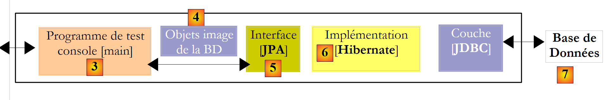
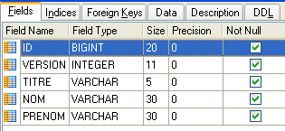
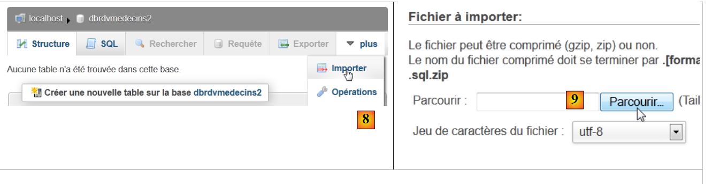
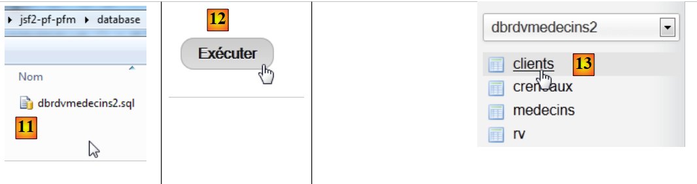
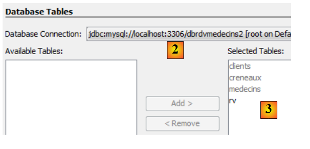
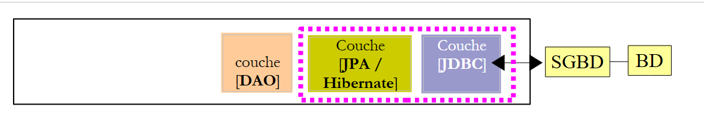

4. o de JPA: una visión general
Nuestro objetivo es presentar JPA (Java Persistence API) con algunos ejemplos. JPA se trata en el curso:
- Persistencia en Java 5 en la práctica: [http://tahe.developpez.com/java/jpa] - proporciona las herramientas para crear la capa de acceso a datos con JPA
4.1. El papel de JPA en una arquitectura por capas
Se recomienda a los lectores que revisen el inicio de este documento (párrafo 2), donde se explica el papel de la capa JPA en una arquitectura por capas. La capa JPA forma parte de las capas de acceso a datos:
 |
La capa [DAO] interactúa con la especificación JPA. Independientemente del producto que la implemente, la interfaz de la capa JPA que se presenta a la capa [DAO] sigue siendo la misma. A continuación, presentamos algunos ejemplos de [ref1] que nos ayudarán a crear nuestra propia capa JPA.
4.2. JPA - Ejemplos
4.2.1. Ejemplo 1: representación de objetos de una sola tabla
4.2.1.1. La tabla [person]
Consideremos una base de datos con una única tabla [person] cuya función es almacenar información sobre personas:
 |
clave primaria de la tabla | |
versión de la fila en la tabla. Cada vez que se modifica la persona, se incrementa su número de versión. | |
apellido de la persona | |
nombre | |
su fecha de nacimiento | |
entero 0 (soltero) o 1 (casado) | |
número de hijos |
4.2.1.2. La entidad [Persona]
Nos encontramos en el siguiente entorno de ejecución:
 |
La capa JPA [5] debe servir de puente entre el mundo relacional de la base de datos [7] y el mundo de los objetos [4] manipulados por los programas Java [3]. Este puente se establece mediante la configuración, y hay dos formas de hacerlo:
- utilizando archivos XML. Esta era prácticamente la única forma de hacerlo hasta la llegada de JDK 1.5
- utilizando anotaciones Java desde JDK 1.5
En este documento, utilizaremos exclusivamente el segundo método.
El objeto [Person] que representa la tabla [person] presentada anteriormente podría ser el siguiente:
...
@SuppressWarnings("unused")
@Entity
@Table(name="Personne")
public class Personne implements Serializable{
@Id
@Column(name = "ID", nullable = false)
@GeneratedValue(strategy = GenerationType.AUTO)
private Integer id;
@Column(name = "VERSION", nullable = false)
@Version
private int version;
@Column(name = "NOM", length = 30, nullable = false, unique = true)
private String nom;
@Column(name = "PRENOM", length = 30, nullable = false)
private String prenom;
@Column(name = "DATENAISSANCE", nullable = false)
@Temporal(TemporalType.DATE)
private Date datenaissance;
@Column(name = "MARIE", nullable = false)
private boolean marie;
@Column(name = "NBENFANTS", nullable = false)
private int nbenfants;
// manufacturers
public Personne() {
}
public Personne(String nom, String prenom, Date datenaissance, boolean marie,
int nbenfants) {
setNom(nom);
setPrenom(prenom);
setDatenaissance(datenaissance);
setMarie(marie);
setNbenfants(nbenfants);
}
// toString
public String toString() {
...
}
// getters and setters
...
}
La configuración se realiza mediante anotaciones Java (@Annotation). Las anotaciones Java son procesadas por el compilador o por herramientas especializadas en tiempo de ejecución. Aparte de la anotación de la línea 3, destinada al compilador, todas las anotaciones aquí incluidas están destinadas a la implementación de JPA que se esté utilizando, ya sea Hibernate o Toplink. Por lo tanto, serán procesadas en tiempo de ejecución. A falta de herramientas capaces de interpretarlas, estas anotaciones se ignoran. Así, la clase [Person] anterior podría utilizarse en un contexto que no sea JPA.
Existen dos casos distintos para el uso de anotaciones JPA en una clase C asociada a una tabla T:
- la tabla T ya existe: en ese caso, las anotaciones JPA deben replicar la estructura existente (nombres y definiciones de columnas, restricciones de integridad, claves externas, claves primarias, etc.)
- la tabla T no existe y se creará basándose en las anotaciones encontradas en la clase C.
El caso 2 es el más fácil de manejar. Mediante las anotaciones JPA, especificamos la estructura de la tabla T que queremos. El caso 1 suele ser más complejo. Es posible que la tabla T se haya creado hace mucho tiempo fuera de cualquier contexto JPA. Por lo tanto, su estructura puede no ser adecuada para el puente relacional-objeto de JPA. Para simplificar las cosas, nos centraremos en el caso 2, en el que la tabla T asociada a la clase C se creará basándose en las anotaciones JPA de la clase C.
Examinemos las anotaciones JPA de la clase [Person]:
- línea 4: la anotación @Entity es la primera anotación esencial. Se coloca antes de la línea que declara la clase e indica que la clase en cuestión debe ser gestionada por la capa de persistencia de JPA. Sin esta anotación, se ignorarían todas las demás anotaciones de JPA.
- línea 5: la anotación @Table designa la tabla de la base de datos que representa la clase. Su argumento principal es name, que especifica el nombre de la tabla. Sin este argumento, la tabla recibirá el nombre de la clase, en este caso [Person]. En nuestro ejemplo, la anotación @Table es, por lo tanto, innecesaria.
- Línea 8: La anotación @Id se utiliza para designar el campo de la clase que corresponde a la clave principal de la tabla. Esta anotación es obligatoria. Aquí, indica que el campo id de la línea 11 corresponde a la clave principal de la tabla.
- Línea 9: La anotación @Column se utiliza para vincular un campo de la clase a la columna de la tabla que representa dicho campo. El atributo name especifica el nombre de la columna en la tabla. Si se omite este atributo, a la columna se le asigna el mismo nombre que al campo. En nuestro ejemplo, el argumento name era, por lo tanto, opcional. El argumento nullable=false especifica que la columna asociada al campo no puede tener un valor NULL y que, por lo tanto, el campo debe tener un valor.
- Línea 10: La anotación @GeneratedValue especifica cómo se genera la clave principal cuando es generada automáticamente por el SGBD. Este será el caso en todos nuestros ejemplos. No es obligatoria. Por lo tanto, nuestra clase `Person` podría tener un número de identificación de estudiante que sirva como clave principal y que no sea generado por el SGBD, sino establecido por la aplicación. En este caso, se omitiría la anotación @GeneratedValue. El argumento strategy especifica cómo se genera la clave primaria cuando la genera el SGBD. No todos los SGBD utilizan la misma técnica para generar valores de clave primaria. Por ejemplo:
utiliza un generador de valores que se invoca antes de cada inserción | |
el campo de clave primaria se define con el tipo Identity. El resultado es similar al generador de valores de Firebird, salvo que el valor de la clave no se conoce hasta después de insertar la fila. | |
utiliza un objeto llamado SEQUENCE, que a su vez actúa como generador de valores |
La capa JPA debe generar diferentes sentencias SQL en función del SGBD para crear el generador de valores. Se configura para especificar el tipo de SGBD que debe gestionar. Como resultado, puede determinar la estrategia estándar para generar valores de clave primaria para ese SGBD. El argumento strategy = GenerationType.*****AUTO* indica a la capa JPA que utilice esta estrategia estándar. Esta técnica ha funcionado en todos los ejemplos de este documento para los siete SGBD utilizados.
- Línea 14: La anotación @Version designa el campo utilizado para gestionar el acceso simultáneo a la misma fila de la tabla.
Para comprender esta cuestión del acceso simultáneo a la misma fila de la tabla [person], supongamos que una aplicación web permite actualizar la información de una persona y consideremos el siguiente escenario:
En el momento T1, el usuario U1 comienza a editar a una persona P. En ese momento, el número de hijos es 0. Cambia este número a 1, pero antes de enviar sus cambios, el usuario U2 comienza a editar a la misma persona P. Dado que U1 aún no ha enviado sus cambios, U2 ve el número de hijos como 0 en su pantalla. U2 cambia el nombre de la persona P a mayúsculas. A continuación, U1 y U2 guardan sus cambios en ese orden. El cambio de U2 tendrá prioridad: en la base de datos, el nombre aparecerá en mayúsculas y el número de hijos seguirá siendo cero, aunque U1 crea que lo ha cambiado a 1.
El concepto de la versión de una persona nos ayuda a resolver este problema. Repasemos el mismo caso de uso:
En el momento T1, un usuario U1 comienza a editar a la persona P. En este punto, el número de hijos es 0 y la versión es V1. Cambia el número de hijos a 1, pero antes de confirmar su cambio, un usuario U2 comienza a editar a la misma persona P. Dado que U1 aún no ha confirmado su cambio, U2 ve el número de hijos como 0 y la versión como V1. U2 cambia el nombre de la persona P a mayúsculas. A continuación, U1 y U2 confirman sus cambios en ese orden. Antes de confirmar un cambio, verificamos que el usuario que modifica a la persona P tenga la misma versión que la versión actualmente guardada de la persona P. Este será el caso del usuario U1. Por lo tanto, su cambio se acepta y, a continuación, cambiamos la versión de la persona modificada de V1 a V2 para indicar que la persona ha sufrido un cambio. Al validar la modificación de U2, observaremos que U2 tiene la versión V1 de la persona P, mientras que la versión actual es V2. Entonces podemos informar al usuario U2 de que alguien más ha actuado antes que él y que debe comenzar con la nueva versión de la persona P. Lo hará, recuperará una versión V2 de la persona P que ahora tiene un hijo, pondrá el nombre en mayúsculas y validará. Su modificación se aceptará si la persona P registrada sigue siendo la versión V2. En definitiva, se tendrán en cuenta las modificaciones realizadas por U1 y U2, mientras que en el caso de uso sin versiones, una de las modificaciones se habría perdido.
La capa [DAO] de la aplicación cliente puede gestionar la versión de la clase [Person] por sí misma. Cada vez que se modifique un objeto P, la versión de ese objeto se incrementará en 1 en la tabla. La anotación @Version permite transferir esta gestión a la capa JPA. El campo en cuestión no tiene por qué llamarse «version», como en el ejemplo. Puede tener cualquier nombre.
Los campos correspondientes a las anotaciones @Id y @Version están presentes con fines de persistencia. No serían necesarios si la clase [Person] no tuviera que persistir. Podemos ver, por lo tanto, que un objeto se representa de forma diferente dependiendo de si necesita persistir o no.
- Línea 17: Una vez más, la anotación @Column proporciona información sobre la columna de la tabla [person] asociada al campo name de la clase Person. Aquí encontramos dos nuevos argumentos:
- unique=true indica que el nombre de una persona debe ser único. Esto dará lugar a la adición de una restricción de unicidad en la columna NAME de la tabla [person] de la base de datos.
- length=30 establece el número de caracteres de la columna NAME en 30. Esto significa que el tipo de esta columna será VARCHAR(30).
- Línea 24: La anotación @Temporal se utiliza para especificar el tipo SQL de una columna o campo de fecha/hora. El tipo TemporalType.DATE denota una fecha sin hora asociada. Los otros tipos posibles son TemporalType.TIME para codificar una hora y TemporalType.TIMESTAMP para codificar una fecha y una hora.
Comentemos ahora el resto del código de la clase [Person]:
- Línea 6: La clase implementa la interfaz Serializable. La serialización de un objeto consiste en convertirlo en una secuencia de bits. La deserialización es la operación inversa. La serialización/deserialización se utiliza especialmente en aplicaciones cliente/servidor en las que los objetos se intercambian a través de la red. Las aplicaciones cliente o servidor no son conscientes de esta operación, que es realizada de forma transparente por las JVM. Sin embargo, para que esto sea posible, las clases de los objetos intercambiados deben estar «etiquetadas» con la palabra clave Serializable.
- Línea 37: un constructor para la clase. Ten en cuenta que los campos «id» y «version» no se incluyen entre los parámetros. Esto se debe a que estos dos campos son gestionados por la capa JPA y no por la aplicación.
- Líneas 51 y siguientes: los métodos get y set para cada uno de los campos de la clase. Tenga en cuenta que las anotaciones JPA pueden colocarse en los métodos get de los campos en lugar de en los propios campos. La ubicación de las anotaciones indica el modo que JPA debe utilizar para acceder a los campos:
- si las anotaciones se colocan a nivel de campo, JPA accederá a los campos directamente para leerlos o escribirlos
- si las anotaciones se colocan a nivel de get, JPA accederá a los campos a través de los métodos get/set para leerlos o escribirlos
La posición de la anotación @Id determina la ubicación de las anotaciones JPA en una clase. Cuando se coloca a nivel de campo, indica acceso directo a los campos; cuando se coloca a nivel de get, indica acceso a los campos a través de los métodos get y set. Las demás anotaciones deben colocarse entonces de la misma manera que la anotación @Id.
4.2.2. Configuración de la capa JPA
Las pruebas de la capa JPA se pueden realizar utilizando la siguiente arquitectura:
 |
- en [7]: la base de datos que se generará a partir de las anotaciones de la entidad [Person], así como de las configuraciones adicionales realizadas en un archivo denominado [persistence.xml]
- en [5, 6]: una capa JPA implementada por Hibernate
- en [4]: la entidad [Person]
- en [3]: un programa de prueba basado en consola
La capa JPA se configura a través del archivo [META-INF/persistence.xml]:
 |
En tiempo de ejecución, se busca el archivo [META-INF/persistence.xml] en la ruta de clases de la aplicación.
Analicemos la configuración de la capa JPA en el archivo [persistence.xml] de nuestro proyecto:
<?xml version="1.0" encoding="UTF-8"?>
<persistence version="1.0" xmlns="http://java.sun.com/xml/ns/persistence">
<persistence-unit name="jpa" transaction-type="RESOURCE_LOCAL">
<!-- provider -->
<provider>org.hibernate.ejb.HibernatePersistence</provider>
<properties>
<!-- Persistent classes -->
<property name="hibernate.archive.autodetection" value="class, hbm" />
<!-- logs SQL
<property name="hibernate.show_sql" value="true"/>
<property name="hibernate.format_sql" value="true"/>
<property name="use_sql_comments" value="true"/>
-->
<!-- connection JDBC -->
<property name="hibernate.connection.driver_class" value="com.mysql.jdbc.Driver" />
<property name="hibernate.connection.url" value="jdbc:mysql://localhost:3306/jpa" />
<property name="hibernate.connection.username" value="jpa" />
<property name="hibernate.connection.password" value="jpa" />
<!-- automatic schematic creation -->
<property name="hibernate.hbm2ddl.auto" value="create" />
<!-- Dialect -->
<property name="hibernate.dialect" value="org.hibernate.dialect.MySQL5InnoDBDialect" />
<!-- properties DataSource c3p0 -->
<property name="hibernate.c3p0.min_size" value="5" />
<property name="hibernate.c3p0.max_size" value="20" />
<property name="hibernate.c3p0.timeout" value="300" />
<property name="hibernate.c3p0.max_statements" value="50" />
<property name="hibernate.c3p0.idle_test_period" value="3000" />
</properties>
</persistence-unit>
</persistence>
Para comprender esta configuración, debemos revisar la arquitectura de acceso a datos de nuestra aplicación:
 |
- el archivo [persistence.xml] configura las capas [4, 5, 6]
- [4]: Implementación de JPA por parte de Hibernate
- [5]: Hibernate accede a la base de datos a través de un grupo de conexiones. Un grupo de conexiones es un conjunto de conexiones abiertas al SGBD. Varios usuarios acceden al SGBD, pero, por motivos de rendimiento, no puede superarse un límite N de conexiones abiertas simultáneamente. Un código bien escrito abre una conexión al SGBD durante el menor tiempo posible: ejecuta comandos SQL y cierra la conexión. Lo hará repetidamente, cada vez que necesite trabajar con la base de datos. El coste de abrir y cerrar una conexión no es insignificante, y aquí es donde entra en juego el grupo de conexiones. Cuando se inicia la aplicación, el grupo de conexiones abre N1 conexiones al SGBD. La aplicación solicita una conexión abierta del grupo cada vez que la necesita. La conexión se devuelve al grupo tan pronto como la aplicación ya no la necesita, preferiblemente lo antes posible. La conexión no se cierra y permanece disponible para el siguiente usuario. Un grupo de conexiones es, por lo tanto, un sistema para compartir conexiones abiertas.
- [6]: el controlador JDBC para el SGBD que se está utilizando
Ahora veamos cómo el archivo [persistence.xml] configura las capas [4, 5, 6] anteriores:
- línea 2: la etiqueta raíz del archivo XML es <persistence>.
- línea 3: <persistence-unit> se utiliza para definir una unidad de persistencia. Puede haber varias unidades de persistencia. Cada una tiene un nombre (atributo name) y un tipo de transacción (atributo transaction-type). La aplicación accederá a la unidad de persistencia a través de su nombre, en este caso jpa. El tipo de transacción RESOURCE_LOCAL indica que la aplicación gestiona las transacciones con el propio SGBD. Este será el caso aquí. Cuando la aplicación se ejecuta en un contenedor EJB3, puede utilizar el servicio de transacciones del contenedor. En este caso, estableceremos transaction-type=JTA (Java Transaction API). JTA es el valor predeterminado cuando se omite el atributo transaction-type.
- Línea 5: La etiqueta <provider> se utiliza para definir una clase que implementa la interfaz [javax.persistence.spi.PersistenceProvider], lo que permite a la aplicación inicializar la capa de persistencia. Dado que estamos utilizando una implementación de JPA/Hibernate, la clase utilizada aquí es una clase de Hibernate.
- Línea 6: La etiqueta <properties> introduce propiedades específicas del proveedor elegido. Por lo tanto, dependiendo de si ha elegido Hibernate, TopLink, Kodo, etc., tendrá propiedades diferentes. Las siguientes son específicas de Hibernate.
- Línea 8: Indica a Hibernate que escanee la ruta de clases del proyecto para encontrar clases anotadas con @Entity, de modo que puedan gestionarse. Las clases @Entity también pueden declararse utilizando etiquetas <class>nombre_clase</class>, directamente bajo la etiqueta <persistence-unit>. Esto es lo que haremos con el proveedor JPA/Toplink.
- Las líneas 10-12, que aquí aparecen comentadas, configuran los registros de la consola de Hibernate:
- Línea 10: para habilitar o deshabilitar la visualización de las sentencias SQL emitidas por Hibernate al SGBD. Esto resulta muy útil durante la fase de aprendizaje. Debido al puente relacional/objeto, la aplicación trabaja con objetos persistentes a los que aplica operaciones como [persist, merge, remove]. Es muy útil saber qué sentencias SQL se emiten realmente para estas operaciones. Al estudiarlas, poco a poco aprenderás a anticipar las sentencias SQL que Hibernate generará al realizar dichas operaciones sobre objetos persistentes, y el puente relacional/objeto comenzará a tomar forma en tu mente.
- Línea 11: Las sentencias SQL mostradas en la consola se pueden formatear de forma ordenada para facilitar su lectura
- Línea 12: Las sentencias SQL mostradas también se anotarán
- Las líneas 15–19 definen la capa JDBC (capa [6] en la arquitectura):
- línea 15: la clase del controlador JDBC para el SGBD, en este caso MySQL5
- línea 16: la URL de la base de datos que se está utilizando
- Líneas 17 y 18: el nombre de usuario y la contraseña de conexión
- línea 22: Hibernate necesita saber con qué SGBD está trabajando. Esto se debe a que todos los SGBD tienen extensiones SQL propias —como sus propios métodos para generar automáticamente valores de clave primaria—, lo que significa que Hibernate debe identificar el SGBD específico para enviar sentencias SQL que este pueda entender. [MySQL5InnoDBDialect] hace referencia al SGBD MySQL5 con tablas InnoDB que admiten transacciones.
- Las líneas 24-28 configuran el grupo de conexiones de c3p0 (capa [5] en la arquitectura):
- Líneas 24 y 25: el número mínimo (por defecto 3) y máximo de conexiones (por defecto 15) en el grupo. El número inicial por defecto de conexiones es 3.
- Línea 26: tiempo máximo de espera en milisegundos para una solicitud de conexión del cliente. Tras este tiempo de espera, c3p0 devolverá una excepción.
- Línea 27: Para acceder a la base de datos, Hibernate utiliza sentencias SQL preparadas (PreparedStatement) que c3p0 puede almacenar en caché. Esto significa que, si la aplicación solicita por segunda vez una sentencia SQL preparada que ya se encuentra en la caché, no será necesario volver a prepararla (la preparación de una sentencia SQL conlleva un coste), y se utilizará la que se encuentra en la caché. Aquí especificamos el número máximo de sentencias SQL preparadas que puede contener la caché, en todas las conexiones (una sentencia SQL preparada pertenece a una sola conexión).
- Línea 28: Frecuencia en milisegundos para comprobar la validez de las conexiones. Una conexión del grupo puede dejar de ser válida por diversas razones (el controlador JDBC invalida la conexión porque ha estado abierta demasiado tiempo, el controlador JDBC tiene «errores», etc.).
- Línea 20: Aquí especificamos que, cuando se inicialice la capa de persistencia, se debe generar el esquema de la base de datos para los objetos @Entity. Hibernate dispone ahora de todas las herramientas para generar las sentencias SQL necesarias para crear las tablas de la base de datos:
- la configuración de los objetos @Entity le permite determinar qué tablas generar
- Las líneas 15-18 y 24-28 le permiten establecer una conexión con el SGBD
- la línea 22 le indica qué dialecto SQL debe utilizar para generar las tablas
Por lo tanto, el archivo [persistence.xml] utilizado aquí recrea una nueva base de datos cada vez que se ejecuta la aplicación. Las tablas se recrean (create table) tras ser eliminadas (drop table) si existían. Tenga en cuenta que, obviamente, esto no es algo que deba hacerse con una base de datos de producción...
4.2.3. Ejemplo 2: Relación uno a muchos
4.2.3.1. El archivo de esquema de la base de datos [
1  | 2 |
- en [1], la base de datos, y en [2], su DDL (MySQL5)
Un artículo A(id, versión, nombre) pertenece exactamente a una categoría C(id, versión, nombre). Una categoría C puede contener 0, 1 o más artículos. Tenemos una relación uno a muchos (Categoría -> Artículo) y la relación inversa muchos a uno (Artículo -> Categoría). Esta relación se representa mediante la clave externa que la tabla [article] tiene en la tabla [category] (líneas 24-28 del DDL).
4.2.3.2. Los objetos @Entity que representan la base de datos
Un artículo se representa mediante el siguiente @Entity [Artículo]:
package entites;
...
@Entity
@Table(name="jpa05_hb_article")
public class Article implements Serializable {
// fields
@Id
@GeneratedValue(strategy = GenerationType.AUTO)
private Long id;
@SuppressWarnings("unused")
@Version
private int version;
@Column(length = 30)
private String nom;
// main relationship Article (many) -> Category (one)
// implemented by a foreign key (categorie_id) in Article
// 1 Article must have 1 Category (nullable=false)
@ManyToOne(fetch=FetchType.LAZY)
@JoinColumn(name = "categorie_id", nullable = false)
private Categorie categorie;
// manufacturers
public Article() {
}
// getters and setters
...
// toString
public String toString() {
return String.format("Article[%d,%d,%s,%d]", id, version, nom, categorie.getId());
}
}
- líneas 9-11: clave principal de la @Entity
- líneas 13-15: su número de versión
- líneas 17-18: nombre del artículo
- líneas 20-25: relación muchos a uno que vincula la @Entity Artículo con la @Entity Categoría:
- línea 23: la anotación ManyToOne. «Many» se refiere a la @Entity Article en la que nos encontramos, y «One» se refiere a la @Entity Category (línea 25). Una categoría (One) puede tener varios artículos (Many).
- línea 24: la anotación ManyToOne define la columna de clave externa en la tabla [article]. Se llamará (name) categorie_id, y cada fila debe tener un valor en esta columna (nullable=false).
- Línea 25: La categoría a la que pertenece el artículo. Cuando se añade un artículo al contexto de persistencia, solicitamos que su categoría no se añada inmediatamente (fetch=FetchType.LAZY, línea 23). No sabemos si esta solicitud tiene sentido. Ya lo veremos.
Una categoría está representada por el siguiente @Entity [Category]:
package entites;
...
@Entity
@Table(name="jpa05_hb_categorie")
public class Categorie implements Serializable {
// fields
@Id
@GeneratedValue(strategy = GenerationType.AUTO)
private Long id;
@SuppressWarnings("unused")
@Version
private int version;
@Column(length = 30)
private String nom;
// inverse relationship Category (one) -> Article (many) from relationship Article (many) -> Category (one)
// cascade insertion Category -> insertion Articles
// cascade maj Category -> maj Articles
// cascade delete Category -> delete Articles
@OneToMany(mappedBy = "categorie", cascade = { CascadeType.ALL })
private Set<Article> articles = new HashSet<Article>();
// manufacturers
public Categorie() {
}
// getters and setters
...
// toString
public String toString() {
return String.format("Categorie[%d,%d,%s]", id, version, nom);
}
// bidirectional association Category <--> Article
public void addArticle(Article article) {
// the item is added to the collection of items in the category
articles.add(article);
// article changes category
article.setCategorie(this);
}
}
- líneas 8-11: la clave principal de la @Entity
- líneas 12-14: su versión
- líneas 16-17: el nombre de la categoría
- líneas 19-24: el conjunto de artículos de la categoría
- línea 23: la anotación @OneToMany denota una relación uno a muchos. El «One» se refiere a la @Entity [Category] en la que nos encontramos, y el «Many» se refiere al tipo [Article] de la línea 24: una (One) categoría tiene muchos (Many) artículos.
- línea 23: la anotación es la inversa (mappedBy) de la anotación ManyToOne colocada en el campo category de la @Entity Article: mappedBy=category. La relación ManyToOne colocada en el campo category de la @Entity Article es la relación principal. Es esencial. Implementa la relación de clave externa que vincula la @Entity Article con la @Entity Category. La relación OneToMany colocada en el campo articles de la @Entity Category es la relación inversa. No es esencial. Es una comodidad para recuperar los artículos de una categoría. Sin esta comodidad, estos artículos se recuperarían mediante una consulta JPQL.
- Línea 23: cascadeType.ALL garantiza que las operaciones (persist, merge, remove) realizadas en una @Entity Category se propaguen a sus artículos.
- Línea 24: Los artículos de una categoría se colocarán en un objeto de tipo `Set<Article>`. El tipo `Set` no permite duplicados. Por lo tanto, no se puede añadir dos veces el mismo artículo al objeto `Set<Article>`. ¿Qué significa «el mismo artículo»? Para indicar que el artículo `a` es igual al artículo `b`, Java utiliza la expresión `a.equals(b)`. En la clase Object, la clase padre de todas las clases, a.equals(b) es verdadero si a==b, es decir, si los objetos a y b tienen la misma ubicación en memoria. Se podría querer decir que los elementos a y b son iguales si tienen el mismo nombre. En este caso, el desarrollador debe redefinir dos métodos en la clase [Item]:
- equals: que debe devolver verdadero si los dos elementos tienen el mismo nombre
- hashCode: debe devolver el mismo valor entero para dos objetos [Artículo] que el método equals considera iguales. Aquí, el valor se construirá, por lo tanto, a partir del nombre del artículo. El valor devuelto por hashCode puede ser cualquier entero. Se utiliza en diversos contenedores de objetos, en particular en diccionarios (Hashtable).
La relación OneToMany puede utilizar otros tipos distintos de Set para almacenar el Many, como objetos List. No trataremos estos casos en este documento. El lector puede encontrarlos en [ref1].
- Línea 38: El método [addArticle] nos permite añadir un artículo a una categoría. El método garantiza que se actualicen ambos extremos de la relación OneToMany que vincula [Category] con [Article].
4.3. La API de la capa JPA
Aclaremos el entorno de ejecución de un cliente JPA:
 |
Sabemos que la capa JPA [2] crea un puente entre el dominio de objetos [3] y el dominio relacional [4]. El conjunto de objetos gestionados por la capa JPA dentro de este puente entre objetos y relaciones se denomina «contexto de persistencia». Para acceder a los datos del contexto de persistencia, un cliente JPA [1] debe pasar por la capa JPA [2]:
- puede crear un objeto y pedir a la capa JPA que lo haga persistente. El objeto pasa entonces a formar parte del contexto de persistencia.
- puede solicitar una referencia a un objeto persistente existente a la capa [JPA].
- puede modificar un objeto persistente obtenido de la capa JPA.
- puede pedir a la capa JPA que elimine un objeto del contexto de persistencia.
La capa JPA proporciona al cliente una interfaz denominada [EntityManager] que, como su nombre indica, permite la gestión de objetos @Entity en el contexto de persistencia. A continuación se muestran los principales métodos de esta interfaz:
Añade la entidad al contexto de persistencia | |
Elimina la entidad del contexto de persistencia | |
fusiona un objeto de entidad procedente del cliente que no está gestionado por el contexto de persistencia con el objeto de entidad del contexto de persistencia que tiene la misma clave primaria. El resultado devuelto es el objeto de entidad del contexto de persistencia. | |
coloca un objeto recuperado de la base de datos en el contexto de persistencia a través de su clave primaria. El tipo T del objeto permite a la capa JPA saber qué tabla consultar. El objeto persistente así creado se devuelve al cliente. | |
crea un objeto Query a partir de una consulta JPQL (Java Persistence Query Language). Una consulta JPQL es análoga a una consulta SQL, excepto que consulta objetos en lugar de tablas. | |
Un método similar al anterior, salvo que queryText es un Consulta SQL en lugar de una consulta JPQL. | |
Un método idéntico a createQuery, salvo que la consulta JPQL queryText se ha se ha externalizado a un archivo de configuración y se ha asociado a un nombre. Este nombre es el parámetro del método. |
Un objeto EntityManager tiene un ciclo de vida que no es necesariamente el mismo que el de la aplicación. Tiene un principio y un final. Por lo tanto, un cliente JPA puede trabajar sucesivamente con diferentes objetos EntityManager. El contexto de persistencia asociado a un EntityManager tiene el mismo ciclo de vida que el propio EntityManager. Son inseparables el uno del otro. Cuando se cierra un objeto EntityManager, su contexto de persistencia se sincroniza, si es necesario, con la base de datos y luego deja de existir. Se debe crear un nuevo EntityManager para obtener un nuevo contexto de persistencia.
El cliente JPA puede crear un EntityManager y, por lo tanto, un contexto de persistencia con la siguiente instrucción:
EntityManagerFactory emf = Persistence.createEntityManagerFactory("nom d'une unité de persistance");
- javax.persistence.Persistence es una clase estática que se utiliza para obtener una fábrica de objetos EntityManager. Esta fábrica está asociada a una unidad de persistencia específica. Recordemos que el archivo de configuración [META-INF/persistence.xml] se utiliza para definir unidades de persistencia, y que estas unidades tienen un nombre:
<persistence-unit name="elections-dao-jpa-mysql-01PU" transaction-type="RESOURCE_LOCAL">
En el ejemplo anterior, la unidad de persistencia se denomina elections-dao-jpa-mysql-01PU. Viene con su propia configuración específica, incluido el SGBD con el que trabaja. La instrucción [Persistence.createEntityManagerFactory("elections-dao-jpa-mysql-01PU")] crea una EntityManagerFactory capaz de proporcionar objetos EntityManager destinados a gestionar contextos de persistencia asociados a la unidad de persistencia denominada elections-dao-jpa-mysql-01PU. Un objeto EntityManager —y, por lo tanto, un contexto de persistencia— se obtiene del objeto EntityManagerFactory de la siguiente manera:
Los siguientes métodos de la interfaz [EntityManager] permiten gestionar el ciclo de vida del contexto de persistencia:
Se cierra el contexto de persistencia. Fuerza la sincronización del contexto de persistencia con la base de datos:
| |
El contexto de persistencia se vacía de todos sus objetos, pero no se cierra. | |
El contexto de persistencia se sincroniza con la base de datos tal y como se describe para close() |
El cliente JPA puede forzar la sincronización del contexto de persistencia con la base de datos utilizando el método [EntityManager].flush. La sincronización puede ser explícita o implícita. En el primer caso, corresponde al cliente realizar operaciones de vaciado cuando desee sincronizarse; de lo contrario, la sincronización se produce en momentos específicos que nosotros especificaremos. El modo de sincronización se gestiona mediante los siguientes métodos de la interfaz [EntityManager]:
Hay dos valores posibles para flushMode: FlushModeType.AUTO (predeterminado): la sincronización se produce antes de cada consulta SELECT realizada en la base de datos. FlushModeType.COMMIT: la sincronización se produce únicamente al el final de las transacciones en la base de datos. | |
devuelve el modo de sincronización actual |
En resumen: en el modo FlushModeType.AUTO, que es el predeterminado, el contexto de persistencia se sincronizará con la base de datos en los siguientes momentos:
- antes de cada operación SELECT en la base de datos
- al final de una transacción en la base de datos
- tras una operación de vaciado o cierre en el contexto de persistencia
En el modo FlushModeType.COMMIT, se aplica lo mismo, excepto en el caso de la operación 1, que no se produce. El modo normal de interacción con la capa JPA es el modo transaccional. El cliente realiza diversas operaciones en el contexto de persistencia dentro de una transacción. En este caso, los puntos de sincronización entre el contexto de persistencia y la base de datos son los casos 1 y 2 anteriores en el modo AUTO, y solo el caso 2 en el modo COMMIT.
Concluyamos con la API de la interfaz Query, que permite emitir comandos JPQL en el contexto de persistencia o comandos SQL directamente en la base de datos para recuperar datos. La interfaz Query es la siguiente:
 |
- 1 - El método getResultList ejecuta una consulta SELECT que devuelve varios objetos. Estos se devuelven en un objeto List. Este objeto es una interfaz. Proporciona un objeto Iterator que permite recorrer los elementos de la lista L de la siguiente manera:
Iterator iterator = L.iterator();
while (iterator.hasNext()) {
// exploiter l'objet iterator.next() qui représente l'élément courant de la liste
...
}
La lista L también se puede recorrer utilizando un bucle «for»:
for (Object o : L) {
// exploiter objet o
}
- 2 - El método getSingleResult ejecuta una instrucción JPQL/SQL SELECT que devuelve un único objeto.
- 3 - El método executeUpdate ejecuta una instrucción SQL UPDATE o DELETE y devuelve el número de filas afectadas por la operación.
- 4 - El método setParameter(String, Object) permite asignar un valor a un parámetro con nombre de una consulta JPQL parametrizada
- 5 - El método setParameter(int, Object) establece el parámetro, pero este no se identifica por su nombre, sino por su posición en la consulta JPQL.
4.4. s (JPQL)
JPQL (Java Persistence Query Language) es el lenguaje de consulta de la capa JPA. El lenguaje JPQL es similar al lenguaje SQL utilizado en las bases de datos. Mientras que SQL trabaja con tablas, JPQL trabaja con los objetos que representan dichas tablas. Examinaremos un ejemplo dentro de la siguiente arquitectura:
 |
La base de datos, a la que llamaremos [ dbrdvmedecins2], es una base de datos MySQL5 con cuatro tablas:
 |
Recopila información que se utiliza para gestionar las citas de un grupo de médicos.
4.4.1. La tabla [MEDECINS]
Contiene información sobre los médicos.
 |  |
- ID: el número de identificación del médico; la clave principal de la tabla
- VERSION: un número que identifica la versión de la fila en la tabla. Este número se incrementa en 1 cada vez que se realiza un cambio en la fila.
- LAST_NAME: el apellido del médico
- FIRST NAME: el nombre del médico
- TITLE: su tratamiento (Sra., Sra., Sr.)
4.4.2. La tabla [CLIENTS]
Los clientes de los distintos médicos se almacenan en la tabla [CLIENTS]:
 |  |
- ID: número de identificación del cliente; clave principal de la tabla
- VERSION: número que identifica la versión de la fila en la tabla. Este número se incrementa en 1 cada vez que se realiza un cambio en la fila.
- APELLIDOS: los apellidos del cliente
- NOMBRE: el nombre del cliente
- TÍTULO: su título (Sra., Sra., Sr.)
4.4.3. La tabla [SLOTS]
En ella se enumeran los horarios en los que hay citas disponibles:
 |
 |
- ID: número de identificación del intervalo de tiempo; clave principal de la tabla (fila 8)
- VERSION: número que identifica la versión de la fila en la tabla. Este número se incrementa en 1 cada vez que se realiza un cambio en la fila.
- DOCTOR_ID: número de identificación que identifica al médico al que pertenece este intervalo de tiempo; clave externa en la columna DOCTORS(ID).
- START_TIME: hora de inicio de la franja horaria
- MSTART: minutos de inicio del intervalo de tiempo
- HFIN: hora de finalización del intervalo
- MFIN: minutos de finalización de la franja horaria
La segunda fila de la tabla [SLOTS] (véase [1] más arriba) indica, por ejemplo, que el intervalo n.º 2 comienza a las 8:20 a. m. y termina a las 8:40 a. m., y que pertenece a la doctora n.º 1 (Sra. Marie PELISSIER).
4.4.4. La tabla [RV]
En ella se enumeran las citas concertadas para cada médico:
 |
- ID: identificador único de la cita – clave principal
- DAY: día de la cita
- SLOT_ID: franja horaria de la cita – clave externa en el campo [ID] de la tabla [SLOTS] – determina tanto la franja horaria como el médico asignado.
- CLIENT_ID: ID del cliente para el que se realiza la reserva – clave externa en el campo [ID] de la tabla [CLIENTS]
Esta tabla tiene una restricción de unicidad en los valores de las columnas unidas (DÍA, ID_FRANJA):
Si una fila de la tabla [RV] tiene el valor (DAY1, SLOT_ID1) para las columnas (DAY, SLOT_ID), este valor no puede aparecer en ningún otro lugar. De lo contrario, esto significaría que se han reservado dos citas a la misma hora para el mismo médico. Desde el punto de vista de la programación Java, el controlador JDBC de la base de datos lanza una excepción SQLException cuando esto ocurre.
La fila con ID igual a 3 (véase [1] más arriba) significa que se reservó una cita para el slot n.º 20 y el cliente n.º 4 el 23/08/2006. La tabla [SLOTS] nos indica que el slot n.º 20 corresponde al intervalo de tiempo de 16:20 a 16:40 y pertenece a la doctora n.º 1 (Sra. Marie PELISSIER). La tabla [CLIENTS] nos indica que el cliente n.º 4 es la Sra. Brigitte BISTROU.
4.4.5. Generación de la base de datos
Para crear las tablas y rellenarlas, puede utilizar el script [dbrdvmedecins2.sql]. Con [WampServer], puede proceder de la siguiente manera:
 |
- En [1], haz clic en el icono de [WampServer] y selecciona la opción [PhpMyAdmin] [2],
- En [3], en la ventana que se abre, selecciona el enlace [Bases de datos],
 |
- En [2], crea una base de datos con el nombre [4] y la codificación [5],
- En [7], la base de datos se ha creado. Haga clic en su enlace,
 |
- en [8], importe un archivo SQL,
- que se selecciona del sistema de archivos mediante el botón [9],
 |
- en [11], selecciona el script SQL y en [12] ejecútalo,
- en [13], se han creado las cuatro tablas de la base de datos. Siga uno de los enlaces,
 |
- en [14], el contenido de la tabla.
No volveremos a esta base de datos. Sin embargo, invitamos al lector a seguir su evolución a lo largo de los programas, especialmente cuando las cosas no funcionan.
4.4.6. La capa [JPA]
Volvamos a la arquitectura del ejemplo:
 |
Ahora estamos creando el proyecto Maven para la capa [JPA].
4.4.7. El proyecto de NetBeans
Este es su aspecto:
 |
- En [1], creamos un proyecto Maven de tipo [Aplicación Java] [2],
- en [3], le ponemos nombre al proyecto,
 |
- en [4], el proyecto generado.
4.4.8. Generación de la capa [JPA]
Volvamos a la arquitectura que necesitamos construir:
 |
Con NetBeans, es posible generar automáticamente la capa [JPA]. Es útil familiarizarse con estos métodos de generación automática, ya que el código generado ofrece información valiosa sobre cómo escribir entidades JPA.
4.4.9. Creación de una conexión de NetBeans a la base de datos
- Inicie el SGBD MySQL 5 para que la base de datos esté disponible,
- crea una conexión de NetBeans a la base de datos [dbrdvmedecins2],
 |
- en la pestaña [Servicios] [1], en la sección [Bases de datos] [2], seleccione el controlador JDBC de MySQL [3],
- luego seleccione la opción [4] «Conectar usando» para crear una conexión a una base de datos MySQL,
- en [5], introduce la información solicitada. En [6], el nombre de la base de datos; en [7], el usuario y la contraseña de la base de datos;
- en [8], puede comprobar la información que ha introducido,
- en [9], el mensaje que aparecerá si la información es correcta,
 |
- en [10], se establece la conexión. Puedes ver las cuatro tablas en la base de datos conectada.
4.4.10. Creación de una unidad de persistencia
Volvamos a la arquitectura que estamos construyendo:
 |
Actualmente estamos creando la capa [JPA]. Su configuración se realiza en un archivo [persistence.xml] donde se definen las unidades de persistencia. Cada una de ellas requiere la siguiente información:
- los datos de conexión JDBC (URL, nombre de usuario, contraseña),
- las clases que representarán las tablas de la base de datos,
- la implementación de JPA utilizada. De hecho, JPA es una especificación implementada por diversos productos. En este caso, utilizaremos Hibernate.
NetBeans puede generar este archivo de persistencia mediante un asistente.
 |
- Haz clic con el botón derecho del ratón en el proyecto y selecciona «Crear unidad de persistencia» [1],
- en [2], cree una unidad de persistencia,
|
- en [3], asigne un nombre a la unidad de persistencia que está creando,
- en [4], seleccione la implementación de Hibernate JPA (JPA 2.0),
- en [5], indica que las tablas de la base de datos ya existen y, por lo tanto, no es necesario crearlas. Confirma el asistente,
- en [6], el nuevo proyecto,
- en [7], se ha generado el archivo [persistence.xml] en la carpeta [META-INF],
- en [8], se han añadido nuevas dependencias al proyecto Maven.
El archivo [META-INF/persistence.xml] generado es el siguiente:
<?xml version="1.0" encoding="UTF-8"?>
<persistence version="2.0" xmlns="http://java.sun.com/xml/ns/persistence" xmlns:xsi="http://www.w3.org/2001/XMLSchema-instance" xsi:schemaLocation="http://java.sun.com/xml/ns/persistence http://java.sun.com/xml/ns/persistence/persistence_2_0.xsd">
<persistence-unit name="mv-rdvmedecins-jpql-hibernatePU" transaction-type="RESOURCE_LOCAL">
<provider>org.hibernate.ejb.HibernatePersistence</provider>
<properties>
<property name="javax.persistence.jdbc.url" value="jdbc:mysql://localhost:3306/dbrdvmedecins2"/>
<property name="javax.persistence.jdbc.password" value=""/>
<property name="javax.persistence.jdbc.driver" value="com.mysql.jdbc.Driver"/>
<property name="javax.persistence.jdbc.user" value="root"/>
<property name="hibernate.cache.provider_class" value="org.hibernate.cache.NoCacheProvider"/>
</properties>
</persistence-unit>
</persistence>
Incluye la información proporcionada en el asistente:
- línea 3: el nombre de la unidad de persistencia,
- línea 3: el tipo de transacciones de la base de datos. Aquí, RESOURCE_LOCAL indica que la aplicación gestionará sus propias transacciones,
- líneas 6-9: las propiedades JDBC del origen de datos.
En la pestaña [Diseño], puede ver una vista general del archivo [persistence.xml]:
 |
Para habilitar el registro de Hibernate, completamos el archivo [persistence.xml] de la siguiente manera:
<?xml version="1.0" encoding="UTF-8"?>
<persistence version="2.0" xmlns="http://java.sun.com/xml/ns/persistence" xmlns:xsi="http://www.w3.org/2001/XMLSchema-instance" xsi:schemaLocation="http://java.sun.com/xml/ns/persistence http://java.sun.com/xml/ns/persistence/persistence_2_0.xsd">
<persistence-unit name="mv-rdvmedecins-jpql-hibernatePU" transaction-type="RESOURCE_LOCAL">
<provider>org.hibernate.ejb.HibernatePersistence</provider>
<properties>
<property name="javax.persistence.jdbc.url" value="jdbc:mysql://localhost:3306/dbrdvmedecins2"/>
<property name="javax.persistence.jdbc.password" value=""/>
<property name="javax.persistence.jdbc.driver" value="com.mysql.jdbc.Driver"/>
<property name="javax.persistence.jdbc.user" value="root"/>
<property name="hibernate.cache.provider_class" value="org.hibernate.cache.NoCacheProvider"/>
<property name="hibernate.show_sql" value="true"/>
<property name="hibernate.format_sql" value="true"/>
</properties>
</persistence-unit>
</persistence>
- Línea 11: Solicitamos ver las sentencias SQL generadas por Hibernate,
- línea 12: esta propiedad permite una visualización formateada de estas sentencias.
Se han añadido dependencias al proyecto. El archivo [pom.xml] es el siguiente:
<project xmlns="http://maven.apache.org/POM/4.0.0" xmlns:xsi="http://www.w3.org/2001/XMLSchema-instance"
xsi:schemaLocation="http://maven.apache.org/POM/4.0.0 http://maven.apache.org/xsd/maven-4.0.0.xsd">
<modelVersion>4.0.0</modelVersion>
<groupId>istia.st</groupId>
<artifactId>mv-rdvmedecins-jpql-hibernate</artifactId>
<version>1.0-SNAPSHOT</version>
<packaging>jar</packaging>
<name>mv-rdvmedecins-jpql-hibernate</name>
<url>http://maven.apache.org</url>
<properties>
<project.build.sourceEncoding>UTF-8</project.build.sourceEncoding>
</properties>
<dependencies>
<dependency>
<groupId>junit</groupId>
<artifactId>junit</artifactId>
<version>3.8.1</version>
<scope>test</scope>
</dependency>
<dependency>
<groupId>org.hibernate</groupId>
<artifactId>hibernate-entitymanager</artifactId>
<version>4.1.2</version>
</dependency>
<dependency>
<groupId>org.jboss.logging</groupId>
<artifactId>jboss-logging</artifactId>
<version>3.1.0.GA</version>
</dependency>
<dependency>
<groupId>org.jboss.spec.javax.transaction</groupId>
<artifactId>jboss-transaction-api_1.1_spec</artifactId>
<version>1.0.0.Final</version>
</dependency>
<dependency>
<groupId>org.hibernate</groupId>
<artifactId>hibernate-core</artifactId>
<version>4.1.2</version>
</dependency>
<dependency>
<groupId>antlr</groupId>
<artifactId>antlr</artifactId>
<version>2.7.7</version>
</dependency>
<dependency>
<groupId>dom4j</groupId>
<artifactId>dom4j</artifactId>
<version>1.6.1</version>
</dependency>
<dependency>
<groupId>org.hibernate.javax.persistence</groupId>
<artifactId>hibernate-jpa-2.0-api</artifactId>
<version>1.0.1.Final</version>
</dependency>
<dependency>
<groupId>org.javassist</groupId>
<artifactId>javassist</artifactId>
<version>3.15.0-GA</version>
</dependency>
<dependency>
<groupId>org.hibernate.common</groupId>
<artifactId>hibernate-commons-annotations</artifactId>
<version>4.0.1.Final</version>
</dependency>
</dependencies>
</project>
Todas las dependencias añadidas están relacionadas con el ORM de Hibernate. Añadiremos la dependencia del controlador JDBC de MySQL:
<dependency>
<groupId>mysql</groupId>
<artifactId>mysql-connector-java</artifactId>
<version>5.1.6</version>
</dependency>
4.4.11. Generación de entidades JPA
Las entidades JPA se pueden generar mediante un asistente de NetBeans:
 |
- En [1], cree entidades JPA a partir de una base de datos,
 |
- en [2], selecciona la conexión creada anteriormente [dbrdvmedecins2],
- en [3], seleccione todas las tablas de la base de datos asociada,
 |
- en [4], asigne un nombre a las clases Java asociadas a las cuatro tablas,
- así como un nombre de paquete [5],
- en [6], JPA agrupa las filas de las tablas de la base de datos en colecciones. Elegimos una lista como colección,
 |
- en [7], las clases Java creadas por el asistente.
4.4.12. Las entidades JPA generadas
La entidad [Medecin] refleja la tabla [medecins]. La clase Java está repleta de anotaciones que hacen que el código resulte difícil de leer a primera vista. Si nos quedamos solo con lo esencial para comprender la función de la entidad, obtenemos el siguiente código:
package rdvmedecins.jpa;
...
@Entity
@Table(name = "medecins")
public class Medecin implements Serializable {
@Id
@GeneratedValue(strategy = GenerationType.IDENTITY)
@Column(name = "ID")
private Long id;
@Column(name = "TITRE")
private String titre;
@Column(name = "NOM")
private String nom;
@Column(name = "VERSION")
private int version;
@Column(name = "PRENOM")
private String prenom;
@OneToMany(cascade = CascadeType.ALL, mappedBy = "idMedecin")
private List<Creneau> creneauList;
// manufacturers
....
// getters and setters
....
@Override
public int hashCode() {
...
}
@Override
public boolean equals(Object object) {
...
}
@Override
public String toString() {
...
}
}
- Línea 4: La anotación @Entity convierte a la clase [Medecin] en una entidad JPA, es decir, una clase vinculada a una tabla de la base de datos a través de la API de JPA.
- Línea 5: el nombre de la tabla de la base de datos asociada a la entidad JPA. Cada campo de la tabla se corresponde con un campo de la clase Java,
- Línea 6: la clase implementa la interfaz Serializable. Esto es necesario en aplicaciones cliente/servidor, donde las entidades se serializan entre el cliente y el servidor.
- líneas 10-11: el campo id de la clase [Doctor] se corresponde con el campo [ID] (línea 10) de la tabla [doctors],
- líneas 13-14: el campo title de la clase [Doctor] corresponde al campo [TITLE] (línea 13) de la tabla [doctors],
- líneas 16-17: el campo `nom` de la clase [Medecin] corresponde al campo `[NOM]` (línea 16) de la tabla [medecins],
- filas 19-20: el campo «version» de la clase [Medecin] se corresponde con el campo [VERSION] (fila 19) de la tabla [doctors]. En este caso, el asistente no reconoce que la columna es, en realidad, una columna de versión que debe incrementarse cada vez que se modifica la fila a la que pertenece. Para asignarle esta función, debes añadir la anotación @Version. Lo haremos en un paso posterior,
- líneas 22-23: el campo first_name de la clase [Doctor] corresponde al campo [FIRST_NAME] de la tabla [doctors],
- líneas 10-11: el campo id corresponde a la clave principal [ID] de la tabla. Las anotaciones de las líneas 8-9 aclaran este punto,
- línea 8: la anotación @Id indica que el campo anotado está asociado a la clave primaria de la tabla,
- línea 9: la capa [JPA] generará la clave primaria para las filas que inserte en la tabla [Doctors]. Existen varias estrategias posibles. Aquí, la estrategia GenerationType.IDENTITY indica que la capa JPA utilizará el modo auto_increment de la tabla MySQL,
- líneas 25-26: la tabla [slots] tiene una clave externa en la tabla [doctors]. Una plaza pertenece a un médico. A la inversa, un médico tiene varias plazas asociadas. Por lo tanto, tenemos una relación uno a muchos (un médico a muchos slots), una relación calificada por la anotación @OneToMany en JPA (línea 25). El campo de la línea 26 contendrá todos los slots del médico. Esto se consigue sin necesidad de programar. Para comprender plenamente la línea 25, debemos presentar la clase [Creneau].
Es la siguiente:
package rdvmedecins.jpa;
import java.io.Serializable;
import java.util.List;
import javax.persistence.*;
import javax.validation.constraints.NotNull;
@Entity
@Table(name = "creneaux")
public class Creneau implements Serializable {
@Id
@GeneratedValue(strategy = GenerationType.IDENTITY)
@Column(name = "ID")
private Long id;
@Column(name = "MDEBUT")
private int mdebut;
@Column(name = "HFIN")
private int hfin;
@Column(name = "HDEBUT")
private int hdebut;
@Column(name = "MFIN")
private int mfin;
@Column(name = "VERSION")
private int version;
@JoinColumn(name = "ID_MEDECIN", referencedColumnName = "ID")
@ManyToOne(optional = false)
private Medecin idMedecin;
@OneToMany(cascade = CascadeType.ALL, mappedBy = "idCreneau")
private List<Rv> rvList;
// manufacturers
...
// getters and setters
...
@Override
public int hashCode() {
...
}
@Override
public boolean equals(Object object) {
...
}
@Override
public String toString() {
...
}
}
Solo comentamos las nuevas anotaciones:
- hemos especificado que la tabla [slots] tiene una clave externa a la tabla [doctors]: una plaza está asociada a un médico. Se pueden asociar varias plazas al mismo médico. Tenemos una relación de la tabla [slots] a la tabla [doctors] que se define como muchos a uno (plazas a médico). La anotación @ManyToOne de la línea 32 se utiliza para definir la clave externa,
- la línea 31, con la anotación @JoinColumn, especifica la relación de clave externa: la columna [ID_MEDECIN] de la tabla [slots] es una clave externa sobre la columna [ID] de la tabla [doctors],
- Línea 33: una referencia al médico propietario de la franja horaria. Esto también se consigue aquí sin necesidad de código.
La relación de clave externa entre la entidad [Creneau] y la entidad [Medecin] se implementa, por lo tanto, mediante dos anotaciones:
- en la entidad [Creneau]:
@JoinColumn(name = "ID_MEDECIN", referencedColumnName = "ID")
@ManyToOne(optional = false)
private Medecin idMedecin;
- en la entidad [Doctor]:
@OneToMany(cascade = CascadeType.ALL, mappedBy = "idMedecin")
private List<Creneau> creneauList;
Ambas anotaciones reflejan la misma relación: la de la clave externa de la tabla [appointments] a la tabla [doctors]. Se dice que son inversas entre sí. Solo la relación @ManyToOne es esencial. Define sin ambigüedades la relación de clave externa. La relación @OneToMany es opcional. Si está presente, simplemente hace referencia a la relación @ManyToOne con la que está asociada. Este es el significado del atributo mappedBy en la línea 1 de la entidad [Medecin]. El valor de este atributo es el nombre del campo de la entidad [Creneau] que tiene la anotación @ManyToOne especificando la clave externa. También en la línea 1 de la entidad [Medecin], el atributo cascade=CascadeType.ALL define el comportamiento de la entidad [Medecin] con respecto a la entidad [Creneau]:
- si se inserta una nueva entidad [Doctor] en la base de datos, entonces también deben insertarse las entidades [TimeSlot] del campo de la línea 2,
- si se modifica una entidad [Doctor] en la base de datos, entonces las entidades [Slot] del campo de la línea 2 también deben modificarse,
- si se elimina una entidad [Doctor] de la base de datos, entonces las entidades [Slot] del campo de la línea 2 también deben eliminarse.
Proporcionamos el código de las otras dos entidades sin comentarios específicos, ya que no introducen ninguna notación nueva.
La entidad [Client]
package rdvmedecins.jpa;
...
@Entity
@Table(name = "clients")
public class Client implements Serializable {
@Id
@GeneratedValue(strategy = GenerationType.IDENTITY)
@Column(name = "ID")
private Long id;
@Column(name = "TITRE")
private String titre;
@Column(name = "NOM")
private String nom;
@Column(name = "VERSION")
private int version;
@Column(name = "PRENOM")
private String prenom;
@OneToMany(cascade = CascadeType.ALL, mappedBy = "idClient")
private List<Rv> rvList;
// manufacturers
...
// getters and setters
...
@Override
public int hashCode() {
...
}
@Override
public boolean equals(Object object) {
...
}
@Override
public String toString() {
...
}
}
- Las líneas 24 y 25 reflejan la relación de clave externa entre la tabla [rv] y la tabla [clients].
La entidad [Rv]:
package rdvmedecins.jpa;
...
@Entity
@Table(name = "rv")
public class Rv implements Serializable {
@Id
@GeneratedValue(strategy = GenerationType.IDENTITY)
@Column(name = "ID")
private Long id;
@Column(name = "JOUR")
@Temporal(TemporalType.DATE)
private Date jour;
@JoinColumn(name = "ID_CRENEAU", referencedColumnName = "ID")
@ManyToOne(optional = false)
private Creneau idCreneau;
@JoinColumn(name = "ID_CLIENT", referencedColumnName = "ID")
@ManyToOne(optional = false)
private Client idClient;
// manufacturers
...
// getters and setters
...
@Override
public int hashCode() {
...
}
@Override
public boolean equals(Object object) {
...
}
@Override
public String toString() {
...
}
}
- La línea 13 define el campo `jour` como un tipo Date de Java. Especifica que, en la tabla [rv], la columna [JOUR] (línea 12) es de tipo fecha (sin hora),
- Líneas 16-18: definen la relación de clave externa de la tabla [rv] a la tabla [slots],
- Líneas 20-22: definen la relación de clave externa de la tabla [rv] a la tabla [clients].
La generación automática de entidades JPA nos proporciona una base de trabajo. A veces esto es suficiente, otras veces no. Este es el caso aquí:
- tenemos que añadir la anotación @Version a los distintos campos de versión de las entidades,
- tenemos que escribir métodos toString que sean más explícitos que los generados,
- las entidades [Medecin] y [Client] son análogas. Haremos que deriven de una clase [Person],
- eliminaremos las relaciones inversas @OneToMany de las relaciones @ManyToOne. No son esenciales e introducen complicaciones de programación,
- eliminamos la validación @NotNull en las claves primarias. Al persistir una entidad JPA con MySQL, la entidad tiene inicialmente una clave primaria nula. Solo después de la persistencia en la base de datos la clave primaria de la entidad persistida tiene un valor.
Con estas especificaciones, las distintas clases quedan como sigue:
La clase Person se utiliza para representar a médicos y clientes:
package rdvmedecins.jpa;
import java.io.Serializable;
import javax.persistence.*;
@MappedSuperclass
public class Personne implements Serializable {
private static final long serialVersionUID = 1L;
@Id
@GeneratedValue(strategy = GenerationType.IDENTITY)
@Column(name = "ID")
private Long id;
@Basic(optional = false)
@Column(name = "TITRE")
private String titre;
@Basic(optional = false)
@Column(name = "NOM")
private String nom;
@Basic(optional = false)
@Column(name = "VERSION")
@Version
private int version;
@Basic(optional = false)
@Column(name = "PRENOM")
private String prenom;
// manufacturers
...
// getters and setters
...
@Override
public String toString() {
return String.format("[%s,%s,%s,%s,%s]", id, version, titre, prenom, nom);
}
}
- Línea 6: Ten en cuenta que la clase [Person] no es en sí misma una entidad (@Entity). Servirá como clase padre para las entidades. La anotación @MappedSuperClass lo indica.
La entidad [Client] encapsula las filas de la tabla [clients]. Deriva de la clase anterior [Person]:
package rdvmedecins.jpa;
import java.io.Serializable;
import javax.persistence.*;
@Entity
@Table(name = "clients")
public class Client extends Personne implements Serializable {
private static final long serialVersionUID = 1L;
// manufacturers
...
@Override
public int hashCode() {
...
}
@Override
public boolean equals(Object object) {
...
}
@Override
public String toString() {
return String.format("Client[%s,%s,%s,%s]", getId(), getTitre(), getPrenom(), getNom());
}
}
- Línea 6: La clase [Client] es una entidad JPA,
- línea 7: está asociada a la tabla [clients],
- línea 8: deriva de la clase [Person].
La entidad [Doctor], que encapsula las filas de la tabla [doctors], sigue el mismo patrón:
package rdvmedecins.jpa;
import java.io.Serializable;
import javax.persistence.*;
@Entity
@Table(name = "medecins")
public class Medecin extends Personne implements Serializable {
private static final long serialVersionUID = 1L;
// manufacturers
...
@Override
public int hashCode() {
...
}
@Override
public boolean equals(Object object) {
...
}
@Override
public String toString() {
return String.format("Médecin[%s,%s,%s,%s]", getId(), getTitre(), getPrenom(), getNom());
}
}
La entidad [Creneau] encapsula las filas de la tabla [creneaux]:
package rdvmedecins.jpa;
import java.io.Serializable;
import java.util.List;
import javax.persistence.*;
@Entity
@Table(name = "creneaux")
public class Creneau implements Serializable {
private static final long serialVersionUID = 1L;
@Id
@GeneratedValue(strategy = GenerationType.IDENTITY)
@Basic(optional = false)
@Column(name = "ID")
private Long id;
@Basic(optional = false)
@Column(name = "MDEBUT")
private int mdebut;
@Basic(optional = false)
@Column(name = "HFIN")
private int hfin;
@Basic(optional = false)
@NotNull
@Column(name = "HDEBUT")
private int hdebut;
@Basic(optional = false)
@Column(name = "MFIN")
private int mfin;
@Basic(optional = false)
@Column(name = "VERSION")
@Version
private int version;
@JoinColumn(name = "ID_MEDECIN", referencedColumnName = "ID")
@ManyToOne(optional = false)
private Medecin medecin;
// manufacturers
...
// getters and setters
...
@Override
public int hashCode() {
...
}
@Override
public boolean equals(Object object) {
// TODO: Warning - this method won't work in the case the id fields are not set
...
}
@Override
public String toString() {
return String.format("Creneau [%s, %s, %s:%s, %s:%s,%s]", id, version, hdebut, mdebut, hfin, mfin, medecin);
}
}
- Las líneas 40-42 modelan la relación «muchos a uno» entre la tabla [slots] y la tabla [doctors] en la base de datos: un médico tiene varios turnos, y un turno pertenece a un solo médico.
La entidad [Rv] encapsula las filas de la tabla [rv]:
package rdvmedecins.jpa;
import java.io.Serializable;
import java.util.Date;
import javax.persistence.*;
@Entity
@Table(name = "rv")
public class Rv implements Serializable {
private static final long serialVersionUID = 1L;
@Id
@GeneratedValue(strategy = GenerationType.IDENTITY)
@Basic(optional = false)
@Column(name = "ID")
private Long id;
@Basic(optional = false)
@Column(name = "JOUR")
@Temporal(TemporalType.DATE)
private Date jour;
@JoinColumn(name = "ID_CRENEAU", referencedColumnName = "ID")
@ManyToOne(optional = false)
private Creneau creneau;
@JoinColumn(name = "ID_CLIENT", referencedColumnName = "ID")
@ManyToOne(optional = false)
private Client client;
// manufacturers
...
// getters and setters
...
@Override
public int hashCode() {
...
}
@Override
public boolean equals(Object object) {
...
}
@Override
public String toString() {
return String.format("Rv[%s, %s, %s]", id, creneau, client);
}
}
- Las líneas 27–29 modelan la relación «muchos a uno» entre la tabla [rv] y la tabla [clients] (un cliente puede aparecer en varias entradas de Rv) en la base de datos, y las líneas 23–25 modelan la relación «muchos a uno» entre la tabla [rv] y la tabla [slots] (una ranura puede aparecer en varias entradas de Rv).
4.4.13. El código de acceso a los datos
Ahora añadiremos al proyecto el código para acceder a los datos a través de la capa JPA:
 |
 |
La clase [MainJpql] es la siguiente:
package rdvmedecins.console;
import java.util.Scanner;
import javax.persistence.EntityManager;
import javax.persistence.EntityManagerFactory;
import javax.persistence.Persistence;
public class MainJpql {
public static void main(String[] args) {
// EntityManagerFactory
EntityManagerFactory emf = Persistence.createEntityManagerFactory("mv-rdvmedecins-jpql-hibernatePU");
// entityManager
EntityManager em = emf.createEntityManager();
// keyboard scanner
Scanner clavier = new Scanner(System.in);
// query entry loop JPQL
System.out.println("Requete JPQL sur la base dbrdvmedecins2 (* pour arrêter) :");
String requete = clavier.nextLine();
while (!requete.trim().equals("*")) {
try {
// display query result
for (Object o : em.createQuery(requete).getResultList()) {
System.out.println(o);
}
} catch (Exception e) {
System.out.println("L'exception suivante s'est produite : " + e);
}
// clear the persistence context
em.clear();
// new request
System.out.println("---------------------------------------------");
System.out.println("Requete JPQL sur la base dbrdvmedecins2 (* pour arrêter) :");
requete = clavier.nextLine();
}
// resource closure
em.close();
emf.close();
}
}
- Línea 12: Creación de EntityManagerFactory asociado a la unidad de persistencia que hemos creado anteriormente. El parámetro del método `createEntityManagerFactory` es el nombre de esta unidad de persistencia:
<persistence-unit name="mv-rdvmedecins-jpql-hibernatePU" transaction-type="RESOURCE_LOCAL">
...
</persistence-unit>
- línea 14: creación del EntityManager que gestiona la capa de persistencia,
- Línea 19: Introducción de una consulta JPQL SELECT,
- líneas 23-28: muestra el resultado de la consulta,
- línea 20: la entrada se detiene cuando el usuario escribe *.
Pregunta: Proporcione las consultas JPQL para recuperar la siguiente información:
- lista de médicos ordenados por orden descendente según el apellido
- lista de médicos cuyo título es «Sr.»
- lista de franjas horarias de citas de la Sra. Pelissier
- lista de citas en orden ascendente por fecha
- lista de clientes (por apellido) que concertaron citas con la Sra. Pelissier el 24/08/2006
- Número de clientes de la Sra. Pelissier el 24/08/2006
- clientes que no han concertado una cita
- Médicos que no tienen citas
Nos inspiraremos en el ejemplo de la sección 2.7 de [ref1]. A continuación se muestra un ejemplo de ejecución:
- línea 2: la consulta JPQL,
- líneas 3–11: la consulta SQL correspondiente,
- líneas 12-15: el resultado de la consulta JPQL.
4.5. Vínculos entre el contexto de persistencia y el SGBD
4.5.1. La clase Person
4.5.2. El programa de prueba
1 2 3 4 5 6 7 8 9 10 11 12 13 14 15 16 17 18 19 20 21 22 23 24 25 26 27 28 29 30 31 32 33 34 35 36 37 38 39 40 41 42 43 44 45 46 47 48 49 50 51 52 53 54 55 56 57 58 59 60 61 62 63 64 65 66 67 68 69 70 71 72 73 74 75 76 77 78 79 80 81 82 83 84 85 86 87 88 89 90 91 92 93 94 95 96 97 98 99 100 101 102 103 104 105 106 107 108 109 110 111 112 113 114 115 116 117 118 119 120 121 122 123 124 125 126 127 128 129 130 131 132 133 134 135 136 137 | |
4.5.3. Configuración de Hibernate
4.5.4. La configuración de log4j.properties
4.5.5. Resultados
Pregunta: Explica la relación entre el código Java y los resultados mostrados.